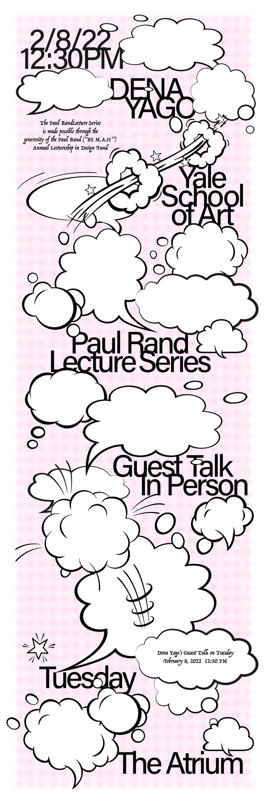

Who are we
The Yale School of Art is a graduate school that confers MFAs in Graphic Design, Painting/Printmaking, Photography, and Sculpture; and offers undergraduate-level art courses to Yale College students. Our website exists as an ongoing collaborative experiment in digital publishing and information sharing. It functions as a wiki—all members of the School of Art community have the ability to add new, and edit most existing content.
Events
Visiting Artist in Graphic Design: Dena Yago Tuesday, February 8 12:30PM 1156 Chapel Street, Graphic Design Atrium Open to the SoA community. Full information on the calendar.
Green Hall Gallery

2022 MFA Thesis Exhibition in Painting/Printmaking Group 1: Jan. 31 – Feb. 10, 2022 Green Hall Gallery, 1156 Chapel Street Group 1 of the two part exhibition features work by 2022 master’s candidates Rachael Catharine Anderson, Bhasha Chakrabarti, Kendrick Corp, Grant Czuj, Opal Ecker DeRuvo, Anne Mailey, Kristoffer McAfee, Alex Puz, Matt Smoak, Ashley Teamer, and Justin James Voiss.
Community Bulletin
FACULTY/ALUMNI: POST YOUR ART APPRENTICESHIP/INTERNSHIP OPPORTUNITIES
FOR UNDERGRADUATES The Yale Arts Apprenticeship Program is an
initiative that connects Yale undergraduates, particularly those on
financial aid, with professional arts practitioners of any discipline.
As an option within Yale’s Summer Experience Award (SEA) funding
model, the Arts Apprenticeship must fulfill the same basic
requirements. Additional details, as well as those specific to the
Arts Apprenticeship are included below. Yale faculty, alumni, or other
arts practitioners interested in featuring positions through the
program should contact Yale’s Creative Careers advisor. Which
Opportunities are Eligible? Must be at least 30 hours/week, for at
least 8-weeks over the summer months. Those 8-weeks do not have to be
continuous if the mentoring Arts Practitioner agrees on a different
schedule. The time commitment need not all be in direct contact with
the Arts Practitioner. Independent projects, tasks, research, etc. can
comprise much of the experience, as long as the Arts Practitioner is
checking in regularly with the student to provide oversight and
career-based context. The opportunity cannot be with a for-profit
organization. The engagement for an Arts Apprenticeship should be
directly with an individual Arts Practitioner and not with a company.
The only exception to this would be if the company overseeing the
apprenticeship were a registered non-profit organization.
For
more information:
https://ocs.yale.edu/channels/arts-apprenticeship/
To post a job, contact:
https://ocs.yale.edu/staff-list/#derek-i-webster
Mapping Public Art in New Haven
Hey everyone! I’ve been mapping public art in New Haven as part of my nonprofit project ArtAround and I’d love to invite you to join me, or just check it out and see what you think.